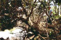
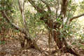
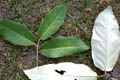
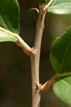
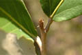
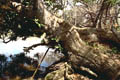
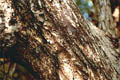
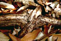
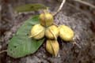
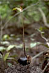

Common name : Boat fruited mangrove, looking-glass plan
Common name in Tamil : Chomuntiri
Common name in Telugu : Adavibadamu
Common name in Singhalese : Etuna










Diagnostic characters
Botany & morphology
Regeneration
Reproductive biology
Ecology
Distribution
Uses
Evergreen tree up to 15 m tall. Bark fissured. Leaves silvery white beneath. Flowers yellowish in tassels; fruit woody samara, purple-brown, kneeled on one side.
Leaves simple, alternate, broadly elliptic, or ovate-elliptic, apex acute or acuminate, base obliquely cordate, lower surface covered with white fimbriate scales; petiole 1 – 2 cm long, short bipulvinate.
Inflorescence axillary panicle.
Flowers small, unisexual, yellowish green and bell shaped; calyx cup shaped; apetalous; male flowers, numerous, 3 - 4 mm across, androgynophore white, ringed by the anther lobes; female flowers 4 – 5 mm across, with sterile anthers at the base of ovary; styles as a short extension of the carpel, stigmas minute and recurved.
Fruit woody samara, 8 – 12 cm across, ellipsoid, smooth, light brown, inner side flat with a prominent midrib bending towards apex, outer side with a well developed rudder-like crest or wing.
Trunk short buttressed, bark fissured, dark or grey.
Tree architecture shows Rauh’s model.
Germination hypogeal, usually with the ventral side of the fruit downward.
Pollination by insect visitors.
Occurs away from the shore, around freshwater streams, sandy tidal banks in the back mangrove.
Tropical Africa to Australia through India, Sri Lanka, Burma, Thailand, Vietnam, Java and Malaysia. In India it occurs in the Western Ghats, Mahanadi tidal and coastal forest of Andaman Islands.
Timber is valued for masts, firewood, house posts, joists, pressers, telegraph poles, wheel-hubs and boat-ribs. Extract of seeds used to treat diarrhea and dysentery.
Top of the page